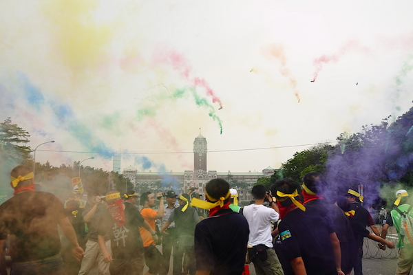
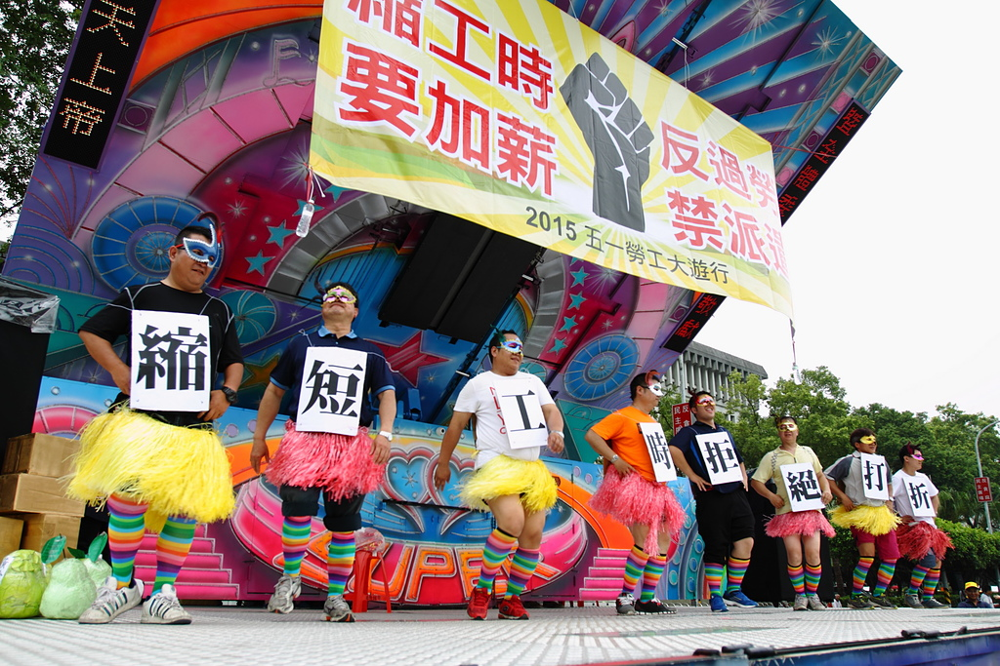
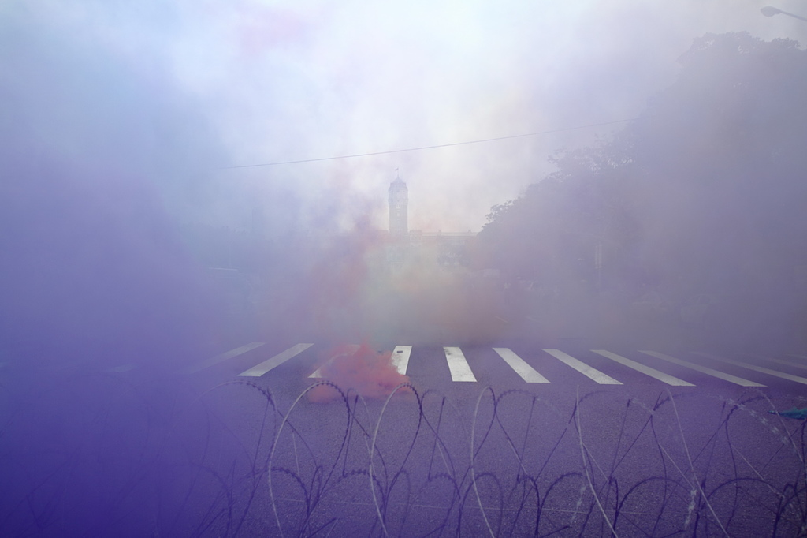
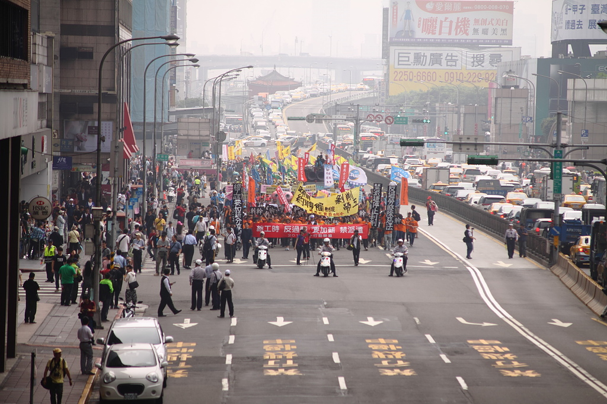
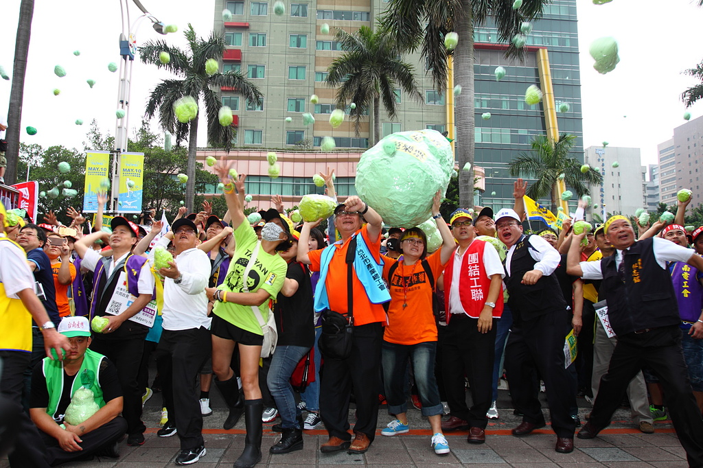
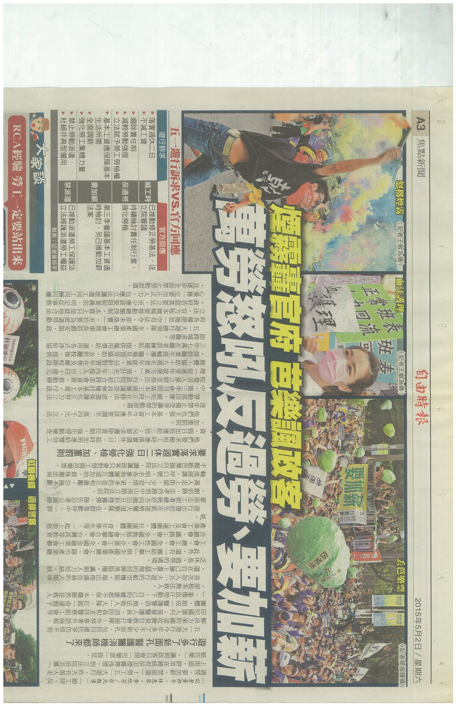
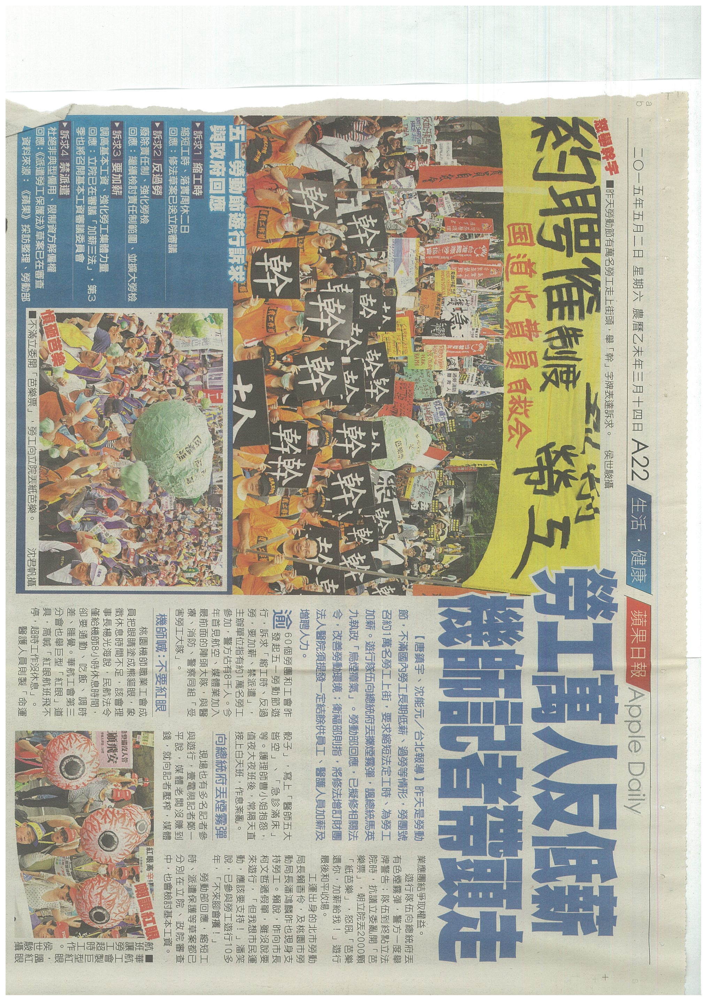

約下午一點在總統府前演出行動劇，並向總統府丟擲煙霧彈，抗議總統七年執政，對於勞工政策「烏煙瘴氣、亂七八糟」，圖：張榮隆

約下午一點在總統府前演出行動劇，並向總統府丟擲煙霧彈，抗議總統七年執政，對於勞工政策「烏煙瘴氣、亂七八糟」，圖：張榮隆

一萬多名勞工集結，在勞動節這一天向政府怒吼，提出訴求：縮工時、反過勞、要加薪、禁派遣，，圖：張榮隆

行動最後各勞工代表拿出自製的紙芭樂道具，向立法院丟擲「芭樂票」，代表抗議各政黨的空頭政策，即結束今天的遊行。，圖：張榮隆


回上一頁